&
Mise à jour du système avec le Gestionnaire de paquets Synaptic : Synaptic
Synaptic est une interface graphique du gestionnaire de paquets.
Les applications sont organisées sous forme de paquets.
Le gestionnaire de paquets permet d'installer, de mettre à jour ou de supprimer ces applications.
Dans ce mémo, c'est à l'utilisateur d'appliquer manuellement les mises à jour.
ATTENTION :
Avant de commencer, le PC doit être connecté à internet.
Voir le chapitre : Les périphériques réseaux (Internet) gérés par NetworkManager.
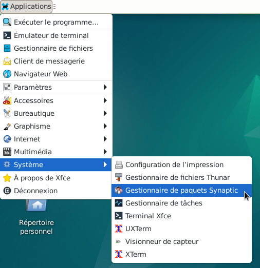
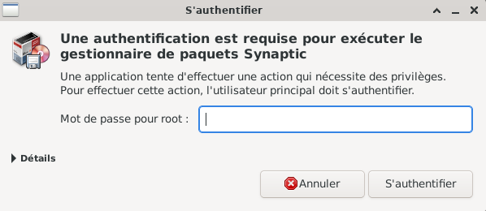
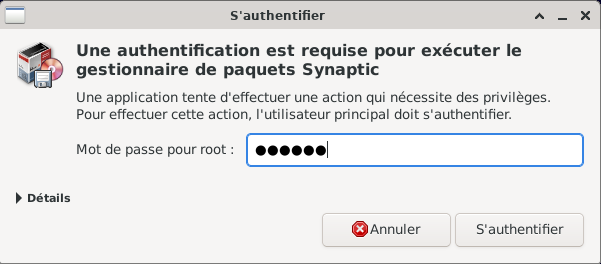
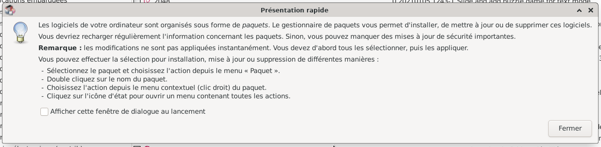
Nota : pour agrandir les images de ce MEMO, positionner le pointeur de la souris sur l'image
Puis clic droit > Ouvrir l'image dans un nouvel onglet.
Dans le navigateur un nouvel onglet a dû s'ouvrir, simple clic sur l'onglet pour visualiser l'image.
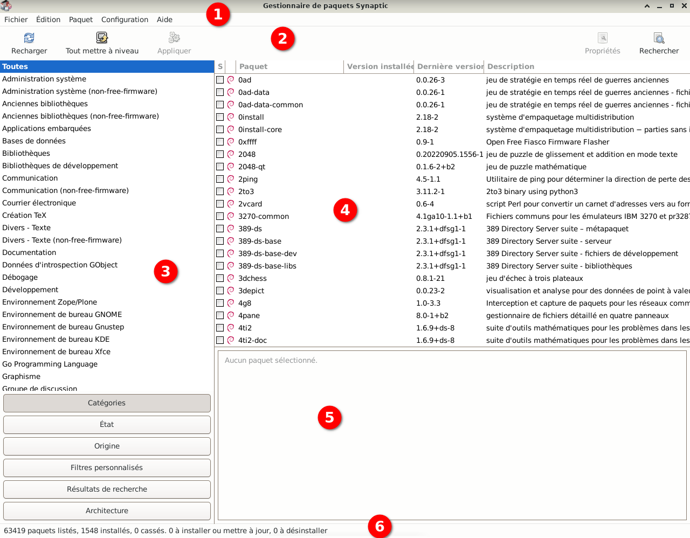
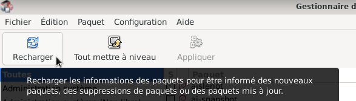
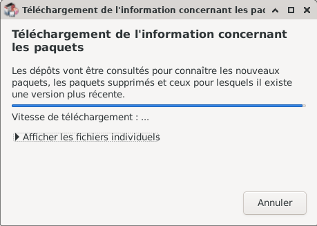
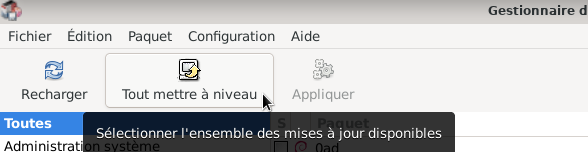
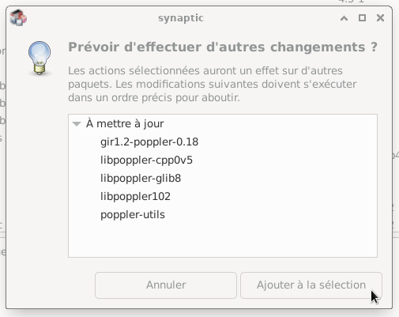
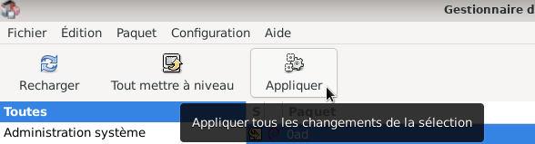
b) Si « Appliquer » est grisé, ne rien faire le système est à jour. Fermer l'application Synaptic.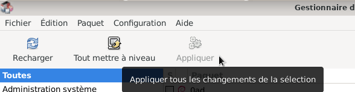
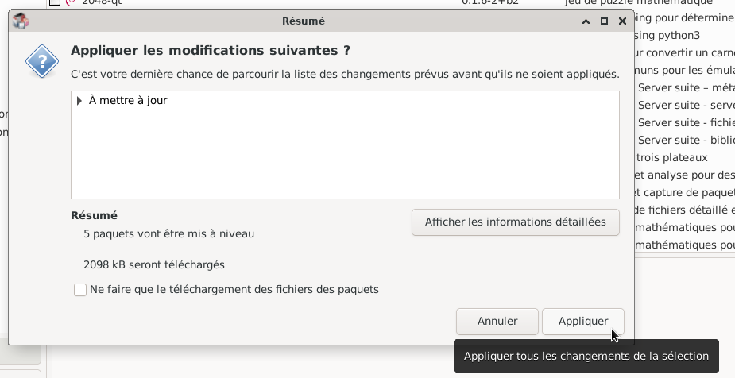
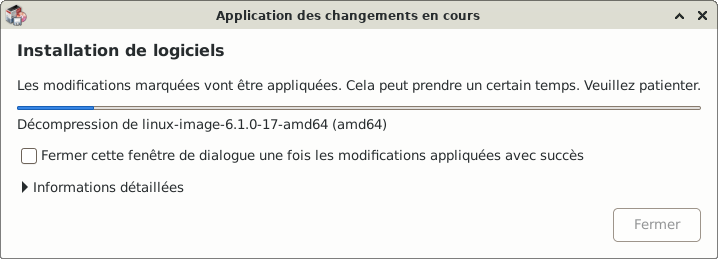
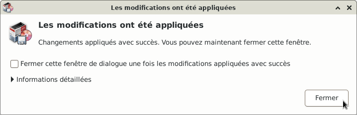
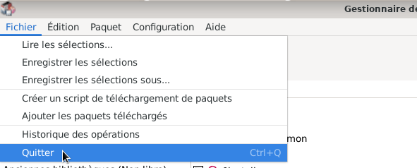
Faire régulièrement les mises à jour de votre PC (par exemple : 1 fois par mois).
C'est très important pour maintenir la sécurité du système.
Dans Gestionnaire de paquets Synaptic, simple clic > Aide pour consulter la documentation.
Visiter la page d'accueil de Synaptic.

Informations sur le logiciel libre et Merci.
Marques déposées :
Ce site ne fait pas partie de Debian, n'est pas produit par le projet
Debian, ni approuvé par le projet Debian.
Ce site n'est pas affilié à Debian. Debian est une marque déposée appartenant
à Software in the Public Interest, Inc.
Contribuer :
Ce site ne fait pas partie de XFCE, n'est pas produit par le projet
XFCE, ni approuvé par le projet XFCE.
Ce site n'est pas affilié à XFCE.
Ce site est juste réalisé par un passionné.